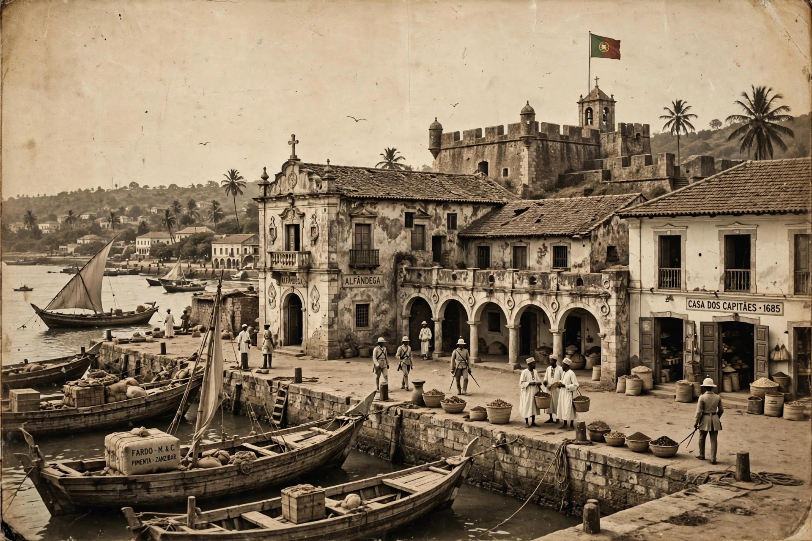

| Portuguese Mozambique (Portuguese East Africa) | |
|---|---|
| Status | Colony, later overseas province, of Portugal |
| Period | 1498–1975 (effective colonisation 19th–20th c.) |
| Capital | Lourenço Marques (now Maputo) |
| Currency | Mozambican escudo |
| Ended | Independence, 25 June 1975 |

Portuguese Mozambique, or Portuguese East Africa, was the common name by which Mozambique was known during the period in which it was a Portuguese colony, and from 1951 an overseas province of Portugal. Portuguese presence began when Vasco da Gama reached the coast in 1498, and ended with independence on 25 June 1975 after the Mozambican War of Independence.
For centuries Portuguese influence was confined to coastal trading posts such as Mozambique Island, Sofala and Quelimane, and to the prazo estates of the Zambezi valley, trading in gold, ivory and — increasingly from the 18th century — enslaved people. The interior kingdoms, including the Rozvi Empire and later the Gaza kingdom of Gungunhana, remained independent until the military campaigns of the 1890s brought effective occupation, spurred by the European Scramble for Africa and the British Ultimatum of 1890.
Much of the territory was at first administered by chartered companies, the Mozambique Company and the Niassa Company. Under the Estado Novo regime the colony was developed as a source of cotton, cashews, sugar and migrant labour for South African mines, under a system that long included forced labour (chibalo) and the legal distinction between indígenas and assimilated assimilados. Lourenço Marques and Beira grew as ports serving the landlocked British colonies of the interior.
The liberation movement FRELIMO, founded in 1962 under Eduardo Mondlane and later led by Samora Machel, launched an armed struggle in 1964. After Portugal's Carnation Revolution of April 1974, the Lusaka Accord led to a transitional government and full independence on 25 June 1975, ending nearly five centuries of Portuguese rule.